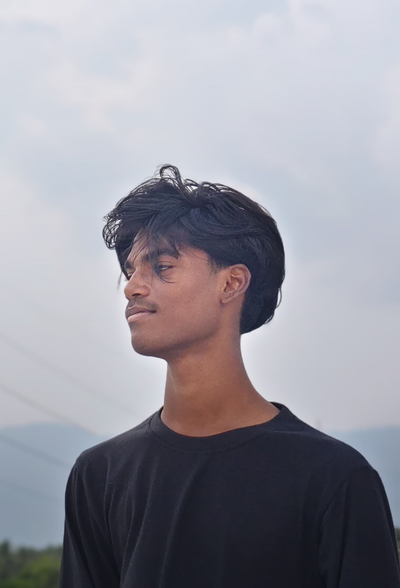

Hi, I'm Rajkrishna 👋
I'm the creator of PixelCraft, a fully pixel-themed world inspired by Minecraft. I built every part of this site—from the quiz game to the animated UI.
I love crafting creative experiences with a retro vibe. Whether it's designing games or developing entire websites, I always add my pixel-perfect touch.
Thanks for visiting! Stay curious and keep building. 🎮